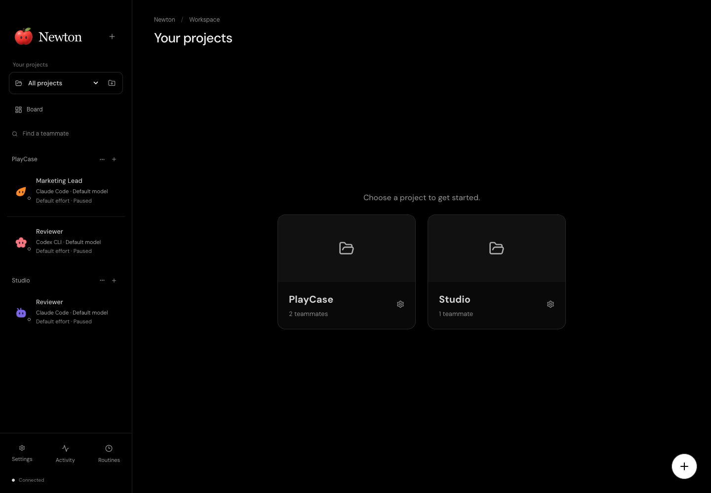
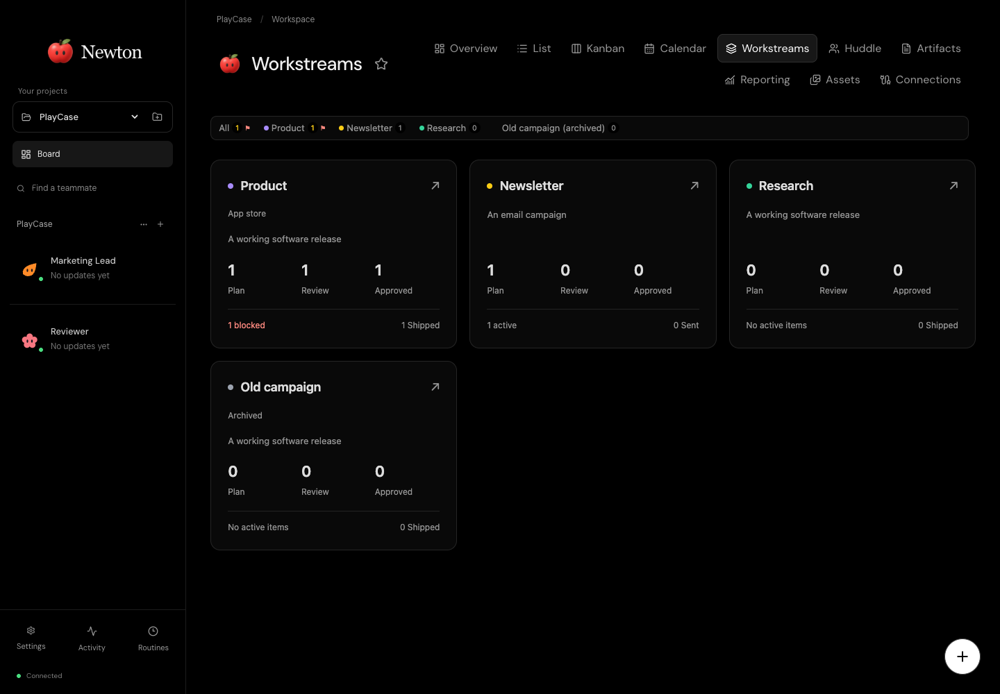
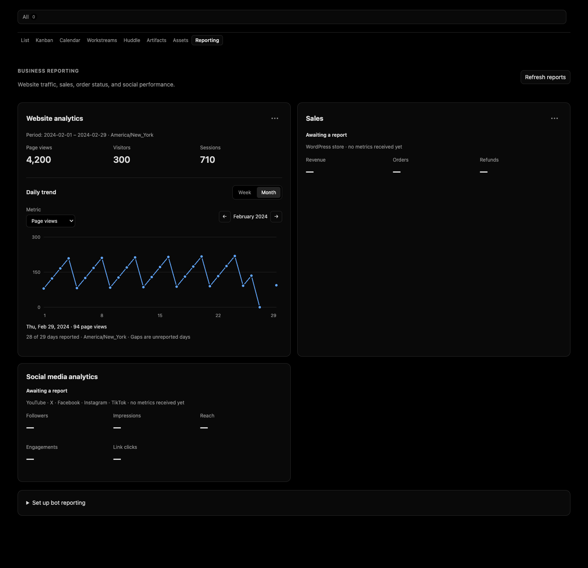
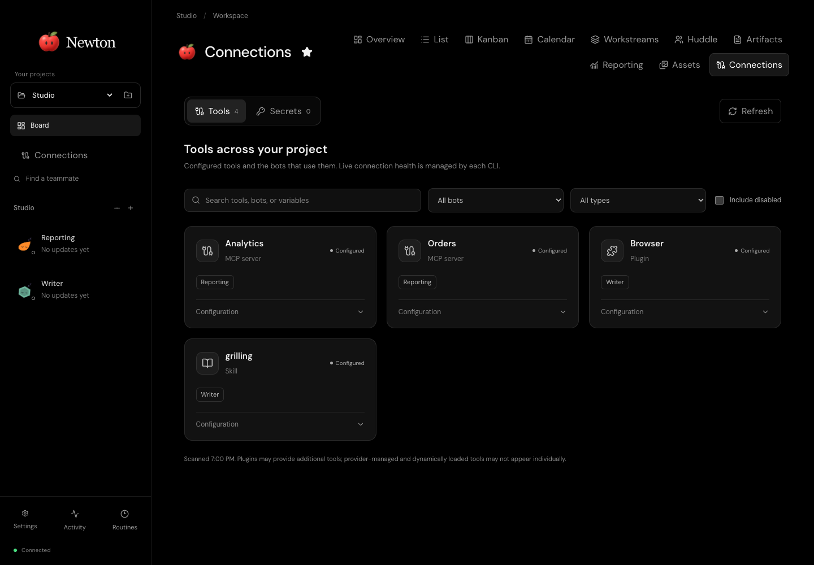
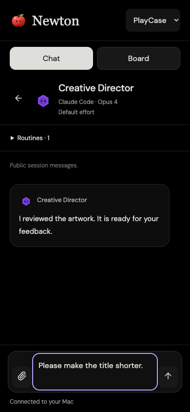
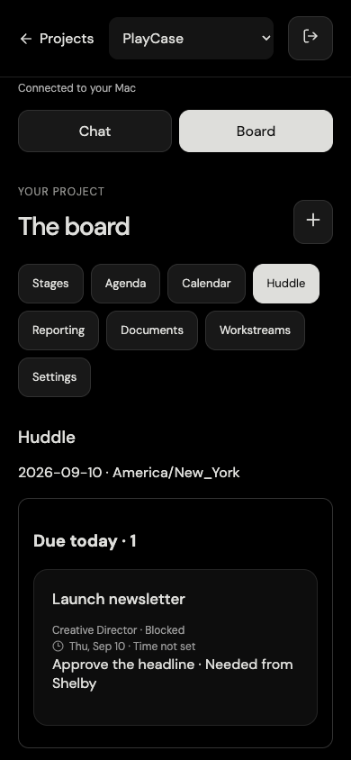

Your AI team, with a place to call home. Work with Codex, Claude, and Google’s Gemini CLI. Keep chat open while routines run, bring your plans and reports together, and check in from your phone.
A GOOD IDEA STARTS SOMEWHERE.+ Say hello to Newton.
From the first brief to the finished work.
Codex CLI+Claude Code+Gemini CLIOne home.
A TEAM WITH PERSONALITY
Good company comes in every shape.
Twenty familiar faces. A little curiosity, confidence, and delight.
Orbitcuriosity
Embermischief
Leafshyness
Crystalconfidence
Tideaffection
Pebblesleepiness
Sproutjoy
Plumaffection
Copperdetermination
Cloudsurprise
Sunjoy
Berrymischief
Slateconfidence
Bloomaffection
Mooncuriosity
Pixelmischief
Honeyjoy
Mistworry
Cometsurprise
Sageconfidence
The same expressions your teammates use in Newton. Motion follows your device’s accessibility preference.
01 / YOUR TEAM, AT HOME
Your projects. Their own little world.
Give each teammate a role, a workspace, and a little personality. Come back to their own provider session, with the right instructions and the next task ready.
Newton / Your projects

Project cards keep your teams together. Open a teammate to return to their native terminal.
Your real terminal, ready to go.
Codex and Claude teammates keep their native terminals, with colors, slash commands, keyboard shortcuts, and image paste. Choose models and reasoning effort inside the CLI. Switch views and return to the same screen and scrollback.
Background work. Room to talk.
Board briefs and teammate handoffs use the main conversation. Scheduled routines use fresh worker sessions, so chat stays available. Follow each routine’s progress and results, or stop its run without closing chat. Up to four routine workers can run at once, with one per workspace.
Ready when you return.
Newton keeps bot connections open and restores their saved sessions after a disconnect. Recent reply previews and activity show what happened. Connection problems stay visible while Newton reconnects. Interrupted tasks remain available for review instead of being replayed automatically.
A workspace that feels like yours.
Give projects their own icon and header image, pin your go-to teammates, and choose a startup screen. Star a Board view to make it your default. Each project keeps its own team, workspaces, and shared artifacts; bots can also use an existing folder.
02 / THE WORK, IN VIEW
A shared plan. A clearer next step.
Your project Board brings briefs, owners, dates, blockers, and finished work together. Shape each Board around the work your project needs.
List
Kanban
Calendar
Workstreams
Huddle
Artifacts
Reporting
Assets
Connections
Newton / Workstreams

Workstreams demo with sample projects and counts. Completed work remains in history and totals.
WORKSTREAMS & WORKFLOW
Different work. The right definition of done.
A content release, a software change, and a research brief can each have their own requirements within the same project.
Every workstream, in view.
Overview cards show each stream’s goal, stage counts, blockers, and completed total—even for empty or archived streams. Open a card to focus its Board. Start with General, Content, Software, or Research templates, then set the rules, destination, colors, and labels.
Define what done means.
Set the expected output, review requirements, approval meaning, and completion criteria. Optionally require a deliverable before review, approval before completion, and a link, file reference, or receipt as completion evidence.
Accept the work. Authorize the action.
Internal work, such as research or artwork, can be accepted and completed without launching another task. External actions, such as publishing or deployment, need their own approval. Choose a type per card or use the workstream default. Internal work can have a deadline and a human owner.
Approve it for the right time.
Approve an external action for a date, time, and timezone, or leave it undated to queue it immediately. Run now changes the timing; Cancel action returns it to Review. Changes to approved content invalidate approval, and failed or uncertain results return with a blocker.
Give your team the whole brief.
Set owners and dates, add notes and attachments, and send a brief directly to its owner. Teammates can read workflow rules, create cards, submit review content, report blockers, and record completion. Preparation and the later external action stay distinct.
Keep the work with the plan.
Edit Markdown artifacts beside your Board. Upload, preview, rename, move, and organize images and videos in the asset library, with folders and recoverable deletion. Card attachments keep the supporting files close to the brief.
You decide what approval means. Accepting internal work completes the deliverable. Approving an external action queues its next step for the chosen time. Provider permissions still apply, and you and your teammates verify completion evidence.
03 / THE DAY, AND THE BIGGER PICTURE
Know what needs you. See what changed.
Start with the work that matters today. Then look at the results your reporting bot has collected, with the source and period close at hand.
Start the day in Huddle.
See due-today and overdue work, blockers, review requests, and recent activity. Open the card that needs you, or check your teammates’ status. Huddle brings the daily overview to desktop and phone.
Due today
Overdue
Needs you
Recent activity
Reports with their context intact.
Bring website analytics, sales, processing orders, and social performance into your project. Explore desktop week and month charts, pick a source account, inspect daily readings, and revisit saved report history.
Each snapshot keeps its source, account, reporting period, evidence, and collecting bot. Missing readings stay missing. Processing-order details appear when the bot supplies them.
Reporting uses connected accounts and a configured collection bot. Set up its source access and a routine for recurring reports. Refresh reloads saved reports; collecting new readings is the bot’s job.

Reporting demo. All displayed numbers are sample data, not business results.
04 / THE RIGHT TOOLS, THE RIGHT ACCESS
A clear view of what connects.
See the tools your teammates are configured to use, assign project secrets deliberately, and keep an eye on provider usage.
Newton / Connections

Connections demo with sample tools and teammates. Secret values are never shown in the inventory.
Know which tools belong to whom.
Browse configured MCP servers, plugins, extensions, and skills across your project. Filter by bot, type, or name, and inspect configuration scope. The inventory reflects saved configuration; each provider still manages sign-in and live connection health.
Give access deliberately.
Save a project secret and assign it to specific bots. Values stay out of the visible inventory and are supplied to assigned bots when they connect. Reconnect affected idle bots after a change; busy teammates can finish first. Secret management stays on the Mac.
See the limits ahead.
Settings shows Codex account limits and Claude’s latest subscription report, with usage meters, reset times, and freshness labels. Limits are shared across your account. Gemini quota and separate Hermes consumption are not available in Newton yet.
Project secrets use private local files protected by your macOS account’s file permissions. Bot assignments control which processes receive a value; they do not isolate it from other software running as your account.
05 / A LITTLE CLOSER, WHEREVER YOU ARE
Away from your desk. Still with your team.
The phone web companion connects back to Newton on your Mac. Send a message, review the work, check Huddle, or read your latest reports.
Keep the same conversation going.Read session messages and results, send text and images, switch teammates, and cancel queued work. Phone messages join the main bot session used on your Mac.
Take the Board with you.Use stages, agenda, calendar, and Workstreams. Update briefs, dates, notes, references, attachments, and documents. Accept internal work or approve, run, and cancel external actions.
Check the day and the results.Huddle brings due work and review requests together. Reporting shows saved snapshots, source periods, daily measurements, and processing-order details. Desktop keeps the richer interactive charts.
Pick up your draft.Chat, card, document, and workflow drafts can recover after navigation or a reload in the same tab. Compare a document with its latest version before saving, and use browser Back and Forward. This is tab-based recovery, not an offline workspace.
Keep routines within reach.Enable, disable, run once, or stop a routine’s current worker. Use a home-screen shortcut to return to your team.
EARLY COMPANION · SETUP REQUIRED
Use PIN sign-in with remembered devices, or Cloudflare Access with QR or one-use-code pairing. Manage phone access on your Mac. A configured gateway and Cloudflare Tunnel provide the connection; keep your Mac and gateway online. Physical-phone verification with your setup is still required.

Chat with your team

Huddle demo · sample task
06 / BUILT TO STAY WITH YOU
More personality. Less starting over.
A rhythm for recurring work.
Schedule intervals, daily or weekly routines, or a custom cron schedule in your timezone. Enable, disable, edit, or run once—or ask a teammate to manage routines. Run now takes priority among waiting routines without changing the schedule. Duplicate pending runs are combined.
Handoffs across providers.
Let teammates delegate across Codex, Claude, Gemini, and the optional Hermes runtime. Tasks stay inside their project, carry the brief, and return a result to the teammate who asked. You can also create bots and submit work from Newton’s command-line client.
A note for the next task.
Teammates can leave durable inbox notes by name without starting a new task. Notes preserve useful context between work sessions. Teammates read and acknowledge their notes when they next begin work.
A proper introduction.
New bots introduce themselves and ask what job to take on. Once their role is established, the onboarding flow guides them to save a charter: their purpose and working instructions. Newton preserves that memory and sends role updates to teammates in the same project.
Profiles that can evolve.
Update a teammate’s name, role, or instructions while its terminal is open. Changes apply at the next prompt. Teammates can also update their own saved profile through Newton’s tools.
A team with personality.
Choose from 20 illustrated characters, each with 12 expressive performances. They react to work, arrivals, completion, and moments that need attention. Newton’s apple reacts too, with a still alternative for reduced motion.
Newton keeps working when you close its window, while your Mac stays awake. Routines resume after wake, with missed occurrences combined. Interrupted runs remain recorded for review.
07 / MORE WAYS TO JOIN THE TEAM
Your choice of good company.
Codex CLI and Claude Code keep their native terminals. Gemini and the optional Hermes runtime use Newton’s terminal interface with their own setup and permissions.
GEMINI CLI · INTEGRATION PREVIEW
Google’s Gemini, in your project.
Use saved sessions, model selection, image paste, editable drafts, routines, and project handoffs. Gemini uses Auto-edit; other actions can request permission. Install a current Gemini CLI and finish sign-in before connecting.
Live authenticated model testing is still pending for this integration.
HERMES · EXPERIMENTAL
A teammate with its own memory.
Hermes brings per-bot memory, skills, and restored sessions to Newton’s projects and Board. Independent routine workers keep its main conversation available. It uses a separate setup and provider sign-in, with Accept Edits permissions.
A live reporting and memory-restoration pilot has passed. Configure billing with your chosen Hermes provider; Newton does not yet show Hermes usage.
SMALL APP. ROOM TO GROW.
Make room for your next good idea.
A local home for your teammates, plans, reports, and connected tools. Keep the conversation going while routines do their work, and stay in touch from your phone.
Early release for macOS 14+, tested on Apple silicon. Install and sign in to a supported Codex CLI, Claude Code, or Gemini CLI; optional Hermes has separate setup. Provider permission checks apply. Reporting source access and phone access require configuration. A public download isn’t available yet.